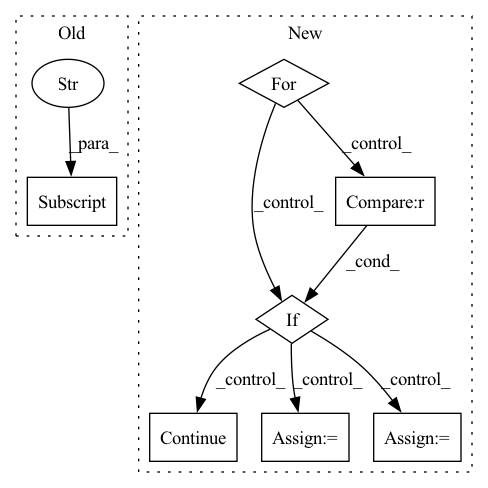

Pattern ID :10295
Before Change
confusion_matrix: Dict[str, int]
):
precision = confusion_matrix["TP"] / (confusion_matrix["TP"] + confusion_matrix["FP"])
recall = confusion_matrix["TP"] / (confusion_matrix["TP"] + confusion_matrix["FN"] )
f1score = 2 * precision * recall / (precision + recall)
metrics = {After Change
metrics = {}
for label, idx in label2index.items():
if label == "O" :
continue
metrics_per_label = {}
true_positive = confusion_matrix[idx][idx]
precision = true_positive / (np.sum(confusion_matrix[:][idx])) // TODO check this
recall = true_positive / (np.sum(confusion_matrix[idx][:]))
metrics_per_label["precision"] = precision
metrics_per_label["recall"] = recall
metrics_per_label["f1-score"] = 2 * precision * recall / (precision + recall)
metrics_per_label["support"] = np.sum(confusion_matrix[idx][:])
return metrics
In pattern: SUPERPATTERN
Frequency: 3
Non-data size: 7
Instances Fragment ID: 36268585
Project Name: ovbystrova/instructionner
Commit Name: 2d15dfed62106e4131fae16bab517811fa49b418
Time: 2022-07-16
Author: OVlBystrova@sberbank.ru
File Name: src/metrics.py
M Class Name: AnonimousClass
N Class Name: AnonimousClass
M Method Name: calculate_metrics_from_confusion_matrix(2)
N Method Name: calculate_metrics_from_confusion_matrix(1)
M Parent Class:
N Parent Class:
M File Name: src/metrics.py
N File Name: src/metrics.py
M Start Line: 106
M End Line: 114
N Start Line: 111
N End Line: 133
Before Change
assert y.shape == ()
assert conf["forces"].attrs["units"] == "eV/Å"
dy = -pt.tensor(conf["forces"] , dtype=pt.float32)
assert dy.shape == pos.shape
assert conf["partial_charges"].attrs["units"] == "e"After Change
assert self.subsample_molecules > 0
for path in tqdm(self.raw_paths, desc="Files"):
h5 = h5py.File(path)
assert h5.attrs["layout"] == "Ace"
version = h5.attrs["layout_version"]
mols = None
load_confs = None
if version == "1.0":
assert "name" in h5.attrs
mols = h5.items()
load_confs = self._load_confs_1_0
elif version == "2.0":
assert len(h5.keys()) == 1
mols = list(h5.values())[0].items()
load_confs = self._load_confs_2_0
else:
raise RuntimeError(f"Unsuported layout verions: {version}")
// Iterate over the molecules
for i_mol, (mol_id, mol) in tqdm(
enumerate(mols),
desc="Molecules",
total=len(mols),
leave=False,
):
// Subsample molecules
if i_mol % self.subsample_molecules != 0 :
continue
z = pt.tensor(mol["atomic_numbers"], dtype=pt.long)
fq = pt.tensor(mol["formal_charges"], dtype=pt.long)
q = fq.sum()
for pos, y, neg_dy, pq, dp in load_confs(mol, n_atoms=len(z)):
// Skip samples with large forces
if self.max_gradient:
if neg_dy.norm(dim=1).max() > float(self.max_gradient):
continue
// Create a sample
args = dict(
z=z, pos=pos, y=y.view(1, 1), neg_dy=neg_dy, q=q, pq=pq, dp=dp
)
if mol_ids:
args["mol_id"] = mol_id
data = Data(**args)
if self.pre_filter is not None and not self.pre_filter(data):
continue Fragment ID: 36268601
Project Name: torchmd/torchmd-net
Commit Name: d23e6500f2cef1fa56d6c99ce5fdb983f1379bca
Time: 2022-10-28
Author: peastman@stanford.edu
File Name: torchmdnet/datasets/ace.py
M Class Name: Ace
N Class Name: Ace
M Method Name: sample_iter(2)
N Method Name: sample_iter(1)
M Parent Class: Dataset
N Parent Class: Dataset
M File Name: torchmdnet/datasets/ace.py
N File Name: torchmdnet/datasets/ace.py
M Start Line: 72
M End Line: 123
N Start Line: 144
N End Line: 206
Before Change
confusion_matrix: Dict[str, int]
):
precision = confusion_matrix["TP"] / (confusion_matrix["TP"] + confusion_matrix["FP"])
recall = confusion_matrix["TP"] / (confusion_matrix["TP"] + confusion_matrix["FN"] )
f1score = 2 * precision * recall / (precision + recall)
metrics = {After Change
metrics = {}
for label, idx in label2index.items():
if label == "O" :
continue
metrics_per_label = {}
true_positive = confusion_matrix[idx][idx]
precision = true_positive / (np.sum(confusion_matrix[:][idx])) // TODO check this
recall = true_positive / (np.sum(confusion_matrix[idx][:]))
Fragment ID: 36268584
Project Name: ovbystrova/instructionner
Commit Name: 2d15dfed62106e4131fae16bab517811fa49b418
Time: 2022-07-16
Author: OVlBystrova@sberbank.ru
File Name: src/metrics.py
M Class Name: AnonimousClass
N Class Name: AnonimousClass
M Method Name: calculate_metrics_from_confusion_matrix(2)
N Method Name: calculate_metrics_from_confusion_matrix(1)
M Parent Class:
N Parent Class:
M File Name: src/metrics.py
N File Name: src/metrics.py
M Start Line: 106
M End Line: 114
N Start Line: 111
N End Line: 133
Before Change
pred_keys = [result["pred_key"] for result in results[0]]
ret = []
for i, pred_key in enumerate(pred_keys):
metrics_list = [result[i]["metrics"] for result in results]
costs = [self.get_cost(metrics_for_threshold, config)
for metrics_for_threshold in metrics_list]
best_idx = np.argmin(costs)After Change
indexed_inputs, model, dataset, model_outputs, metrics_config))
// Get and store the metrics for each facet of the dataset for this margin.
for facet_key in config.facets:
if "data" not in config.facets[facet_key] :
continue
if facet_key not in faceted_results:
faceted_results[facet_key] = []
faceted_model_outputs = [
indexed_outputs[ex["id"]]
for ex in config.facets[facet_key]["data"]]
faceted_results[facet_key].append(self.metrics_gen.run_with_metadata( Fragment ID: 36268662
Project Name: pair-code/lit
Commit Name: c5289c07a1ba31719eb4b4ddaf1aa8a3793f6e73
Time: 2021-08-19
Author: jwexler@google.com
File Name: lit_nlp/components/thresholder.py
M Class Name: Thresholder
N Class Name: Thresholder
M Method Name: run_with_metadata(6)
N Method Name: run_with_metadata(6)
M Parent Class: lit_components.Interpreter
N Parent Class: lit_components.Interpreter
M File Name: lit_nlp/components/thresholder.py
N File Name: lit_nlp/components/thresholder.py
M Start Line: 87
M End Line: 125
N Start Line: 186
N End Line: 238